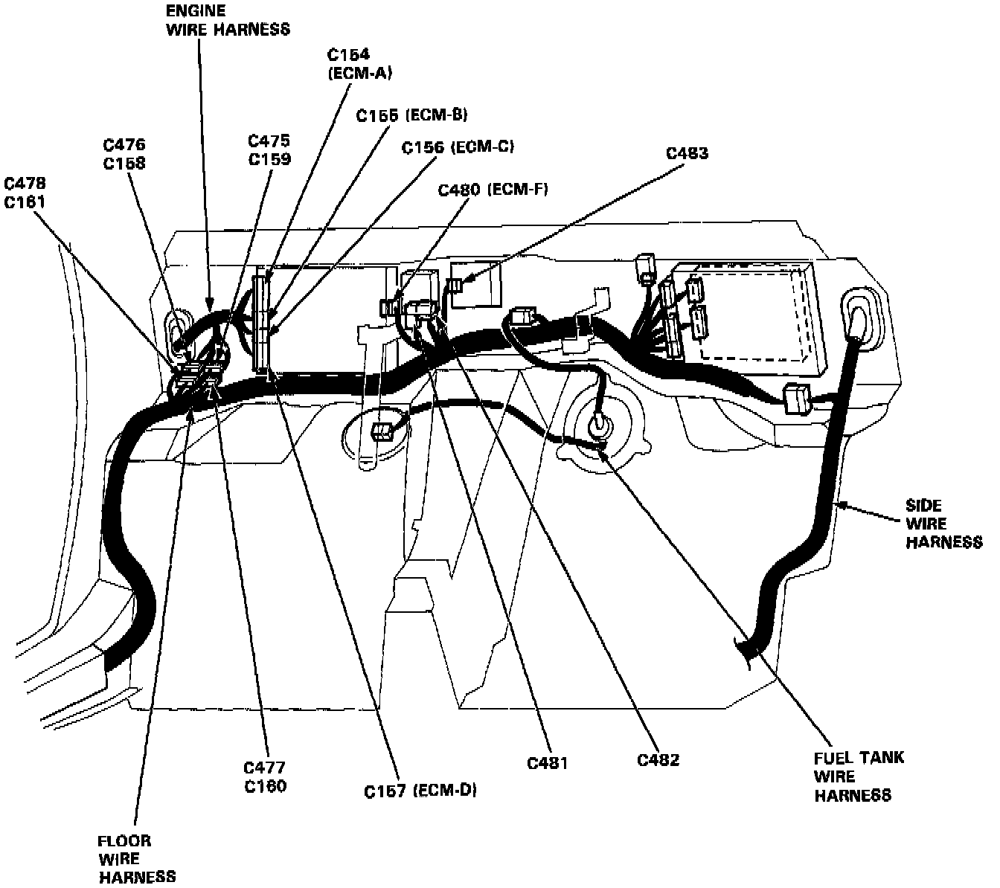
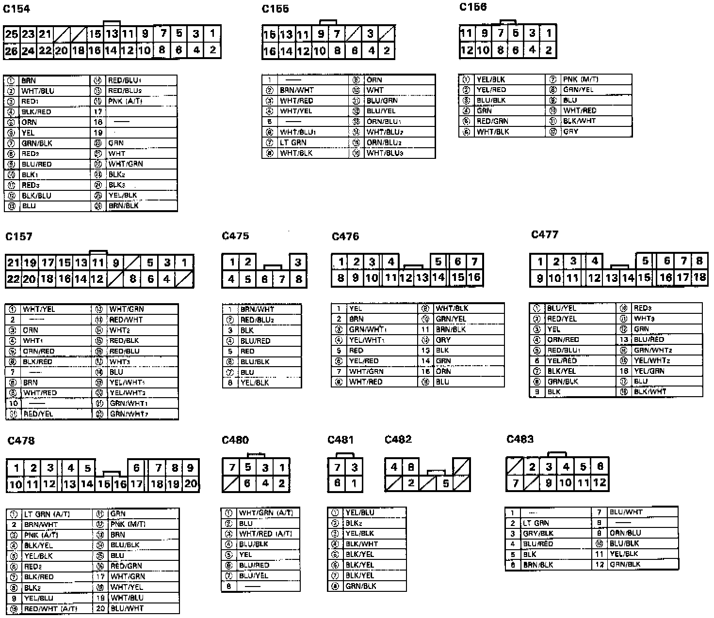
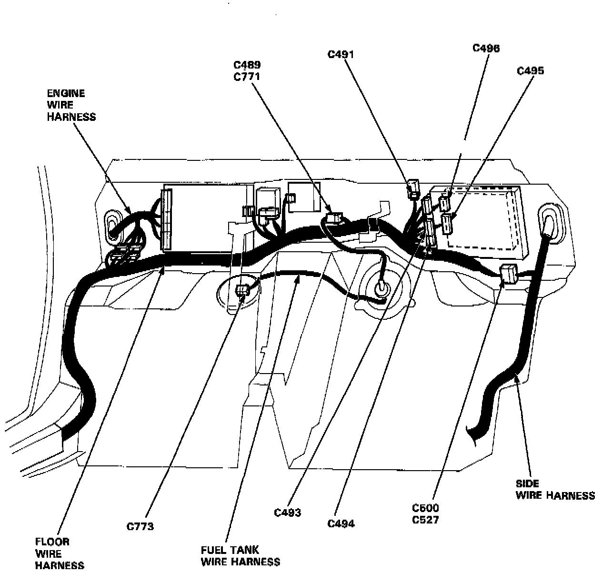
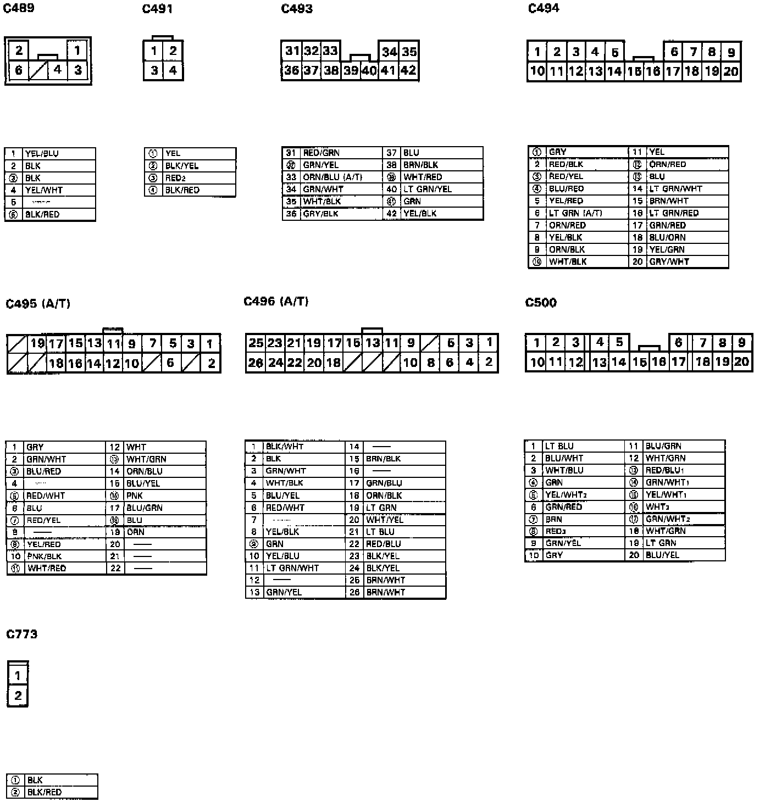

System Connectors - Behind The Seat Back Panels

Behind the seat back panels.

Connector views.

Behind the seat back panels.

Connector views.
NOTE:
- Several different wires have the same color. They have been given a number suffix to distinguish them (for example YEL/BLK1 and YEL/BLK2 are not the same.
- Circled terminal numbers are Related to the PGM-FI System.